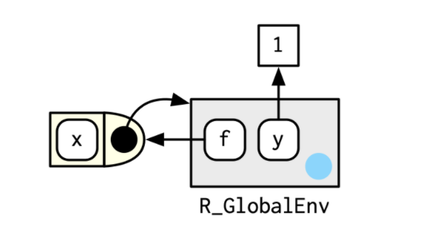
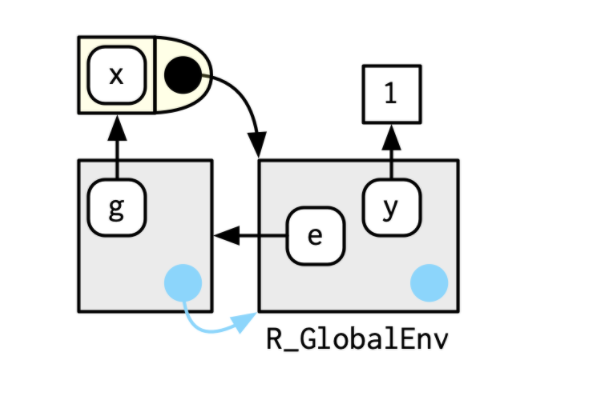
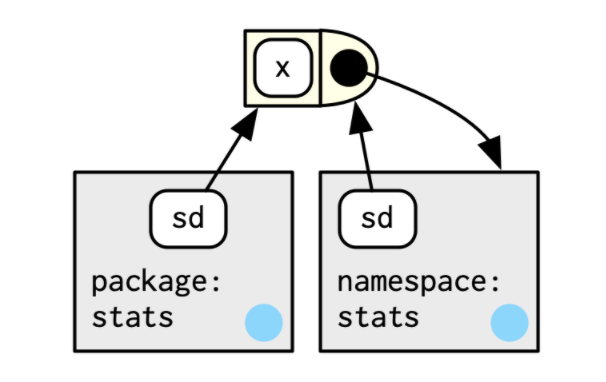

Advanced R Chapter 7: Environments
Daryn Ramsden
2020-05-14
Recall from Chapter 6: R has 4 primary scoping rules
Name masking
names defined inside a function mask names outside the function
if the name can’t be found, R looks one level up
Functions versus variables
- if you use a name in a function call, objects that are not functions get ignored in the search
A fresh start
- every time a function is called, a new environment gets created.
Dynamic lookup
- R looks for values only when it needs them (when the function is run)
The most important things you need to know
An environment’s job is to bind a set of names to a set of values
Environments are different from lists in the following ways
Every name must be unique.
The names in an environment are not ordered.
An environment has a parent.
Environments are not copied when modified i.e. environments use reference semantics
7.2.1 Basics
You can can create environments using
rlang::envornew.env
View an environment using:
rlang::env_print: descriptive info about environment elementsrlang::env_names: to give list of bindingsnames: gives current bindings using base
Click here to see code already run reading in data
brewing_materials = readr::read_csv("https://raw.githubusercontent.com/rfordatascience/tidytuesday/master/data/2020/2020-03-31/brewing_materials.csv")
beer_taxed = readr::read_csv("https://raw.githubusercontent.com/rfordatascience/tidytuesday/master/data/2020/2020-03-31/beer_taxed.csv")
brewer_size = readr::read_csv("https://raw.githubusercontent.com/rfordatascience/tidytuesday/master/data/2020/2020-03-31/brewer_size.csv")
beer_states = readr::read_csv("https://raw.githubusercontent.com/rfordatascience/tidytuesday/master/data/2020/2020-03-31/beer_states.csv")
beer_reviews = readr::read_csv("https://raw.githubusercontent.com/r4ds/bookclub-Advanced_R/master/data/beer_reviews.csv.gz")Create a new environment
7.2.2 Important Environments
Two key environments:
current environment: where code is currently executing
global environment aka your workspace
These are often the same
identical will tell you if two environments are the same
identical(global_env(), current_env())7.2.3 Parents
Every environment has a parent:

this is where R looks next to find names that are not bound in the current environment
the sequence of environments ends with the empty environment
can be set at the time of creation (first argument of
rlang::env) . The current environment will be used otherwise.You can get an environment’s parent using
rlang::env_parentorparent.envor a sequence of parents (ancestors?) usingrlang::env_parents
Creating a new environment with specified parent
Getting the sequence of parents for an environment
A note about the Empty environment
It’s empty because it has no names
My previous (incorrect) mental model: an environment is contained within its parent
My new (correct?) mental model: an environment remembers where its parent lives
7.2.4 Super-assignment
<<- never creates a new variable if the lhs name is not bound: it looks for a variable in a parent environment to modify.
x <- 0
f <- function() {
x <<- 1
}
f()
x7.2.5 Getting and setting
$and[[work similar to with lists[[cannot be used with numeric indices[does not work with environments$and[[return NULL if the binding does not existbinding a name to NULL does not remove it
Other functions
env_poke: adds a binding using a string and a valueenv_bind: binds multiple values to a specified environmentenv_has: determines if an environment contains a name (string input)env_unbind: unbinds a given name (string input)
Trying functions mentioned on previous page
7.2.6 Advanced bindings
Two exotic variants of rlang::env_bind
- Delayed bindings: evaluated the first time they are accessed
Example of a delayed binding
env_bind_lazy(current_env(), b = {Sys.sleep(1); 1})
system.time(print(b))
system.time(print(b))- Active bindings: recomputed each time they are accessed
Example of an active binding
env_bind_active(current_env(), z1 = function(val) runif(1))7.3 Recursing Over Environments
Two methods for recursing over environments. How do we find which environment contains a name?
Recursive implementation
where <- function(name, env = caller_env()) {
if (identical(env, empty_env())) {
# Base case
stop("Can't find ", name, call. = FALSE)
} else if (env_has(env, name)) {
# Success case
env
} else {
# Recursive case
where(name, env_parent(env))
}
}Iterative implementation
where2 <- function(in_name, env = caller_env()) {
while (!identical(env, empty_env())) {
if (env_has(env, in_name)) {
return(env)
}
# inspect parent
env <- env_parent(env)
}
return (env)
}7.4.1 Package environments and the search path
Every attached package becomes a parent of the global environment
the most recently-attached package becomes the immediate parent of the global environment and links to the previous parent as its own parent
the search path is the sequence of environments containing all attached packages and continuing to the empty environment
the last two packages on the search path are always the
Autoloadsandbaseenvironments

7.4.2 The function environment
A function binds the current environment when it is created i.e. this becomes the environment that the function sees
A name is typically bound to a function on function creation (I think anonymous functions are going to )
The environment in which a name is bound to a function is not necessarily the environment that the function binds.
Two differing example situations
 
Example of a function binding the global environment while being bound to another environment
e <- env()
e$g <- function() 1Accessing the environment of a function
We can use rlang::fn_env or environment to access the environment of a function:
y <- 1
f <- function(x) x + y
fn_env(f)
#environment(f)7.4.3 Namespaces
Question: How do we avoid ambiguities caused by varying the order of attaching packages?
Short answer: packages have a different sequence of parents
Longer answer:
Each package has two environments:
The package environment: accessible to the outside world
A namespace environment: internal to the package
all bindings in the package environment are also found here
may have a few extra names
names are bound to the function in both the package and namespace environments but the function specifically sees the namespace environment
Detailed example of namespaces and parents of namespaces
Consider sd:

What are the parents of the namespace environment?

an
importsenvironment: all the functions the package needsthe
baseenvironmentthe global environment
sd: The entire picture

7.4.4 Execution environments
We know about the function environment but there’s also the …
execution environment
created fresh when the function is called
its parent is the function environment
is ephemeral and will disappear unless you explicitly do something to save it
The following function will return the same result all the time even if called repeatedly:
g <- function(x) {
if (!env_has(current_env(), "a")) {
message("Defining a")
a <- 1
} else {
a <- a + 1
}
a
}Preserving the execution environment
A few ways to preserve the execution environment
return it from the function
return an object with a binding to it e.g. a function created in the function will have the execution environment as its own function environment
Example returning the execution environment of a function
h2 <- function(x) {
a <- x * 2
current_env()
}Example returning a function bound to the execution environment
plus <- function(x) {
function(y) x + y
}
plus_one <- plus(1)
plus_oneCaller Environments
Another important environment, the caller environment:
the environment the function was called from
also where function values will be returned to
Call Stacks
As functions can call each other, there can be multiple functions whose evaluation is in progress.
The collection of these caller environments is the call stack.
Call stacks can be:
simple (linear)
not simple: they may have multiple branches
7.5.1 Simple Call Stacks
An example of a simple call stack
f <- function(x) {
g(x = 2)
}
g <- function(x) {
h(x = 3)
}
h <- function(x) {
lobstr::cst()
}
f(x = 1)## █
## 1. └─global::f(x = 1)
## 2. └─global::g(x = 2)
## 3. └─global::h(x = 3)
## 4. └─lobstr::cst()7.5.2 Lazy Evaluation
Lazy evaluation can lead to multiple branches of the call stack
Example:
a <- function(x) b(x)
b <- function(x) c(x)
c <- function(x) x
a(f())## █
## 1. ├─global::a(f())
## 2. │ └─global::b(x)
## 3. │ └─global::c(x)
## 4. └─global::f()
## 5. └─global::g(x = 2)
## 6. └─global::h(x = 3)
## 7. └─lobstr::cst()We can see from the traceback that
the function calls avoided evaluating
f()all the way down untilcreally needed the valuecame back to the global environment to evaluate
f()had to evaluate
lobstr::csv,h, andgfirstcould then go back to
c
7.5.3 Frames
Each tier of the call stack is called a frame i.e. each function in progress corresponds to a frame of the stack.
Each frame is characterized by:
An expression, expr describing the function call
An environment, env
* usually the execution environment
* the environment of the global frame is the global environment
* using `eval` generates frames where the environment is a wildcard- A parent, the previous call in the stack
7.5.4 A brief mention of Dynamic Scoping
R does not use dynamic scoping
But maybe it does somewhere
We’ll see when we get to Chapter 20
7.6 As Data Structure
Some situations that environments are useful
Avoiding copies of large data sets (because they use reference semantics)
Managing state within a package
As a hashmap: \(O(1)\) access guaranteed so use an environment if you don’t want to implement your own hash table
Example
my_env <- new.env(parent = emptyenv())
my_env$a <- 1
get_a <- function() {
my_env$a
}
set_a <- function(value) {
old <- my_env$a
my_env$a <- value
invisible(old)
}Quiz Questions
List at least three ways that an environment differs from a list.
What is the parent of the global environment?
What is the only environment that doesn’t have a parent?
What is the enclosing environment of a function? Why is it important?
How do you determine the environment from which a function was called?
How are <- and <<- different?